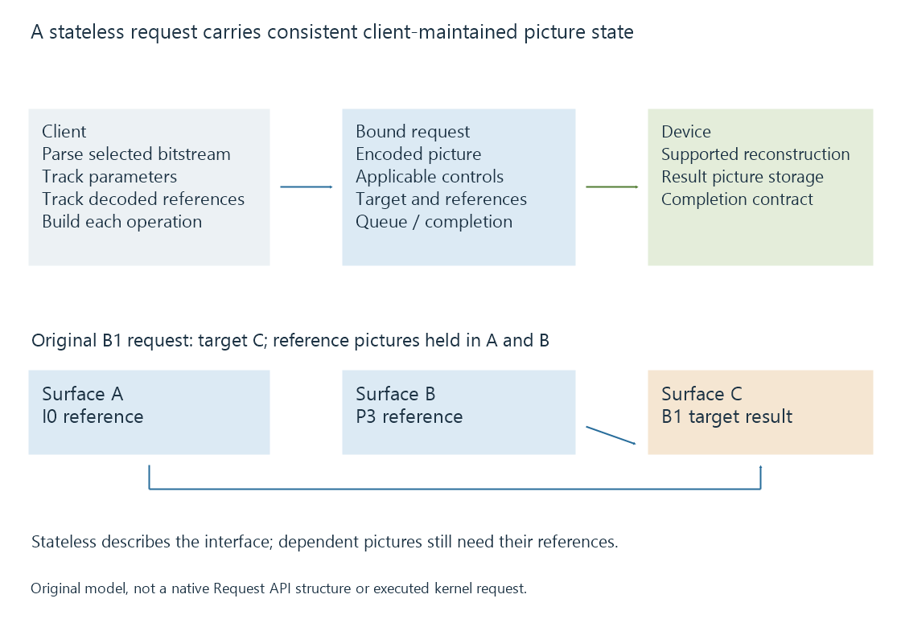

V4L2 stateless decoding and the Request API
V4L2 stateless decoding makes the application supply per-picture decoding state, references and encoded data through requests that bind the operation’s controls and buffers.
A stateless decoder interface makes the application supply the decoding state needed for each picture. The application parses the encoded stream, tracks relevant references and submits the required controls and buffers with the decoding request.
The hardware still reconstructs pictures. The interface moves responsibility for supplying consistent codec state to the client.
Stateless does not remove picture dependencies
Inter-predicted pictures can still need earlier reconstructed pictures. A stateless interface makes those relationships explicit inputs rather than assuming the device maintains the entire coded stream's state on the application's behalf.
The Linux kernel contrasts this with the stateful decoder contract, where the application provides encoded stream data and obtains pictures under the driver/device's stateful behavior.

| Responsibility | Stateless-interface role |
|---|---|
| Container and bitstream parsing | Client supplies the selected encoded picture and codec parameters |
| Reference-picture bookkeeping | Client supplies the relevant reference state |
| Request binding | Controls and encoded input belong to the intended operation |
| Reconstruction | Device performs the supported requested decoding |
| Output ordering and lifetime | Client follows the interface's completion/reference rules |
This is an application/device contract. It does not describe whether a particular embedded processor exposes a compatible decoder.
References identify usable reconstructed storage
Use an original four-picture model:
| Picture | Target surface | References in this model |
|---|---|---|
| I0 | A | None |
| P3 | B | A |
| B1 | C | A and B |
| B2 | D | A and B |
The reconstruction order is I0, P3, B1, B2. Their intended presentation order is I0, B1, B2, P3.
A and B are decoded pictures used to reconstruct later pictures. The model keeps those references in storage while B1 and B2 need them.
This readable request fixture illustrates one relationship:
{
"request": "model-R-B1",
"codedPicture": "B1",
"targetSurface": "C",
"referenceSurfaces": ["A", "B"],
"parameters": {
"bitDepth": 8,
"chroma": "4:2:0"
}
}
It is not a V4L2 ABI structure or captured request. Real codec controls supply substantially more specific data. The fixture makes the target, references and picture parameters belong to the same declared operation.
The Request API binds controls and buffers
A media request groups the relevant work so controls do not accidentally describe another queued picture.
If the encoded data for B1 were paired with parameters or references for a different picture, completing the request would not make that mismatch meaningful. The application must construct a consistent operation before queueing it.
The request lifecycle includes preparing its data, queueing the request and waiting for its defined completion. Modifying an already queued operation is a different state from building the next request.
For an original conceptual state model:
Build request -> bind controls and encoded input -> queue
Queued operation -> completion observed -> suitable reuse/reinitialization
The model deliberately avoids a native ioctl recipe. The kernel Request API specifies allocation, control association, queueing and reinitialization behavior for actual clients.
Completion does not free every reference
A reconstruction operation finishing establishes progress for that operation. A decoded picture can remain a reference for another outstanding picture and can also be in use by a display or filter consumer.
In the four-picture model, A cannot be overwritten as a new target while B1 or B2 still needs it. Finishing presentation of I0 is insufficient evidence that A has no remaining decoding use.
The kernel's stateless-interface guidance explicitly requires preserving reference resources while relevant decoding still needs them. The client also follows its consumers' ownership contracts.
This is why the number of buffers required can exceed the number of pictures immediately waiting for display.
Output must be related to the programme timeline
The client combines decoded results with the intended presentation timing and ordering. Completion order, decode order and display order have different meanings.
A pending P3 result can be needed as a reference before B1 is reconstructed, while P3 is presented after B2. Choosing the next displayed picture solely by the order in which the reconstruction calls were made would mishandle that model.
Packet timestamps provide the broader timing context. The Request API coordinates an operation; the application's media state places its result in the programme.
A seek establishes a new reference context
A jump to another programme position can require new parser and decoded-reference state. The client resolves a suitable access point and reconstructs the pictures needed for the requested destination.
In the declared four-picture model, submitting B2 alone cannot provide the A and B references it names. A reference label retained from another source or a replaced decoder context is not proof that suitable reconstructed storage exists for this new request.
The client therefore has to relate each reference to the active stream and decoded-picture context. A source change can also alter dimensions or codec parameters, requiring its new output/configuration relationship.
This explains a specific kind of restart cost: a hardware block can reconstruct the new pictures quickly once given a consistent request, while the application still needs to establish the correct encoded access and reference sequence.
See Also
- V4L2 memory-to-memory codecs
- DRM PRIME and DMA-BUF frame sharing
- Hardware decoding and software decoding
- Video Keyframes and Random Access
- Packet Timestamps